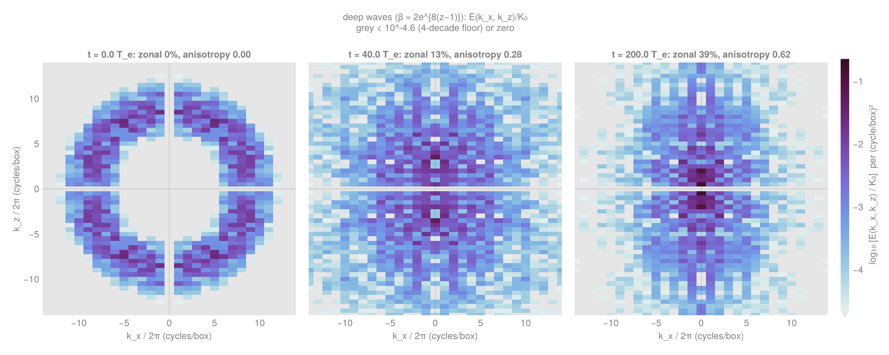

Wave packets crossing turbulent tanks
New: WC25 surface-stress and Vallis 2D results · PDF report
The first six movies each follow one Stokes-drift packet moving left to right at its group speed through decaying grid turbulence in the 12 m × 0.8 m × 0.4 m tank (periodic in x except where noted). The red dashed line is the observation plane at x = 6 m; the black line follows the packet centre. Panels: prescribed surface Stokes drift; surface vertical velocity w in the packet run; w in the matched no-wave control from the same turbulence; their difference, the packet-induced perturbation; and the x–z slice of the Eulerian streamwise perturbation uᴱ − u_control with the Stokes drift already subtracted, where the anti-Stokes shear layer forms within the Stokes depth (dotted line).
Case 1.D M0, 768 × 64 × 64, seed 1
k₀ = 9.3 m⁻¹, τ₀ = 2.8 s, ϵ = 0.22, Uˢ₀ = 50 mm/s; turbulence rms (17, 17, 13) mm/s, L = 0.20 m. Composite residual −11.5 mm/s at M2 (eight seeds).
Case 1.D, bounded tank M2, 1536 × 128 × 128, seed 1, 46 s
Impenetrable end walls (uᴸ = 0). The packet starts 4σ₀ outside the tank, enters through the west wall near t ≈ 10 s, crosses the observation plane at 22.9 s and leaves through the east wall near t ≈ 35 s. Composite residual −10.1 mm/s.
Case 1.A M2, 1536 × 128 × 128, seed 1
k₀ = 9.5 m⁻¹, τ₀ = 2.4 s, ϵ = 0.20, Uˢ₀ = 41 mm/s; the weakest, smallest-scale turbulence (7.1, 6.8, 5.8) mm/s, L = 0.05 m. Composite residual −4.4 mm/s, confined to a thin layer.
Case 1.B M2, 1536 × 128 × 128, seed 1
k₀ = 9.2 m⁻¹, τ₀ = 2.6 s, ϵ = 0.20, Uˢ₀ = 41 mm/s; turbulence (11, 10, 7.3) mm/s, L = 0.26 m. Composite residual −6.9 mm/s.
Case 1.C.1 M2, 1536 × 128 × 128, seed 1
k₀ = 8.9 m⁻¹, τ₀ = 2.9 s, ϵ = 0.15, Uˢ₀ = 24 mm/s; turbulence (16, 12, 9.2) mm/s, L = 0.32 m. The gentler member of the steepness pair; composite residual −8.3 mm/s.
Case 1.C.2 M2, 1536 × 128 × 128, seed 1
Same turbulence and seed as 1.C.1 with ϵ = 0.22, Uˢ₀ = 51 mm/s. Composite residual −13.7 mm/s: a ratio of 1.65 to 1.C.1 against 2.15 for ϵ².
Uniform group, y–z plane M2, 1536 × 128 × 128, seed 1
The same Gaussian Stokes envelope applied everywhere at once (no propagation, no return flow). Top: vertical velocity w in the y–z plane at x = 6 m; middle: Eulerian streamwise velocity uᴱ = u − uˢ(z, t); bottom: w in the matched no-wave control. The anti-Stokes response is identical to the travelling packet's: −10.5 against −10.8 mm/s at the surface.
Langmuir-shear variant, y–z plane M2, seed 1, initial current Uˢ₀e^(2kz)
Same group over the same turbulence, but the initial Eulerian current has the shape of the Stokes drift, so the Eulerian and Stokes shears are aligned (the Craik–Leibovich CL2 condition). Compared with the sheared control (bottom), the group drives stronger vertical exchange in the Stokes layer and decelerates the surface about 50 % more than without shear.
Figure 3(a) of Ellingsen et al. (2026), reproduced case 1.D, periodic tank, 8 seeds
(a) The paper's U₁ (before the group) and U₃ (after) for case 1.D, digitized from the vector figure. (b) The LES with the same intervals (−4.5τ to −3.3τ and 2.0τ to 3.2τ about the group peak) applied to every fluid column. (c) ΔU = U₃ − U₁, experiment against LES: −10.8 ± 0.5 against −12.3 mm/s at the surface. (d) With the mean over the PIV window removed from both, the profiles coincide; the residual is a depth-uniform offset of 1.7 mm/s that a closed, momentum-conserving tank cannot produce (fixed flume discharge, maintained turbulence, or a 0.5 % drift of U₀ between the intervals are the candidates).

Uniform group vs travelling packet, and the Langmuir-shear response case 1.D, M2, 4 seeds
Panels: (1) ΔU profiles over ages 2–3.2τ₀, uniform group against the travelling packet's wake-age composite; (2) surface response against group age; (3) the sheared case's Eulerian current with and without the group; (4) the group-induced change of the sheared current against the unsheared response; (5) vertical-velocity rms; (6) spanwise spectra of w at the Stokes depth.

Steady wave train + Langmuir shear, y–z plane M2, seed 1, uˢ = Uˢ₀e^(2kz) from t = 0
An infinite wave train with the packet-core Stokes drift switched on at t = 0 over the 1.D turbulence and the initial Eulerian current Uˢ₀e^(2kz). Streamwise Langmuir rolls organize the near-surface vertical velocity during the first few seconds and raise w rms in the Stokes layer by 60 %, then consume the aligned shear that feeds them: by 20 s the surface current has reversed and the field is back to ordinary turbulence. Bottom: the sheared control without waves.
Laminar Craik–Leibovich instability M2, no turbulence, 10⁻⁴ m/s noise
The same steady waves and shear current without turbulence, seeded with white noise: vertical velocity grows at 0.38 s⁻¹ into streamwise rolls that saturate near 2–3 mm/s in the top 5 cm and coarsen in spanwise scale.
Steady wave train in the packet tank: anti-Stokes spin-up and the Langmuir variant case 1.D, M2, 4 seeds
Panels: (1) anti-Stokes ΔU profiles since onset without shear; (2) surface velocities against time, including the wave effect on the sheared current; (3) sheared current profiles with and without waves; (4) w rms; (5) spanwise w spectra; (6) growth of the laminar seeded instability.

Top-down view of the four main cases M2, seed 1, x ∈ [3, 8] m, 0–22 s
Rows: the travelling packet, the steady wave train, steady waves with the initial shear current, and steady waves with shear and a wind stress (u* = 4.5 mm/s). Left: vertical velocity one cell below the surface; right: the streamwise velocity anomaly u′ = u − ⟨u⟩_y in the top cell. Streamwise streaks appear in the sheared case for a few seconds and persist in the wind case.
Wind cases over 60 s M2, seed 1, u* = 4.5 and 10 mm/s, with and without waves
Rows: shear + wind (u* = 4.5 mm/s), the same with waves, shear + wind (u* = 10 mm/s), the same with waves. The stronger stress fills the top cell with fine streaks of its own shear turbulence; the wave effect is clearest at La_t ≈ 0.3 and, for both stresses, a few centimetres below the surface.
Steady waves + shear + wind, y–z plane M2, seed 1, u* = 4.5 mm/s
With the surface stress maintaining the aligned shear, a counter-rotating cell pair fills the tank width by 14 s with 40 mm/s downwelling, and the streamwise organization persists to the end of the run instead of decaying with the initial current. Bottom: the wind-only control.
Horizontal slices at 3 cm depth t = 14 s, five cases
Below the wind-drift layer the cells are easier to see: the sheared and wind cases carry streamwise bands of vertical velocity 40–50 % stronger than the packet and plain steady-wave cases.

Wind case analysis u* = 4.5 mm/s, four seeds
Eulerian current with and without waves, the wave-induced change, vertical-velocity rms, the surface anisotropy of w against time (Langmuir cells → high elongated fraction), and the laminar seeded reference.

Stronger free shear (α = 2), y–z plane M2, seed 1, 60 s, steady waves, initial current 2Uˢ₀e^(2kz)
The textbook Langmuir cross-section at 10 s: a counter-rotating cell pair with 50 mm/s downwelling columns carrying high-momentum surface fluid down and low-momentum fluid rising between them. The response peaks at 5–10 s and relaxes by 20–30 s as the aligned shear is consumed. Bottom: the sheared control without waves.
Free shear at α = 1 and 2, top-down M2, seed 1, 60 s, with and without waves
Rows: shear α = 1, waves + shear α = 1, shear α = 2, waves + shear α = 2. Streamwise streaks of vertical velocity appear only with waves and are strongest for the stronger shear.
Signatures of Langmuir turbulence, free-shear runs 60 s, seed 1
Rows: horizontal-mean Lagrangian (solid) and Eulerian (dashed) velocity profiles in time; the anisotropy ⟨w′²⟩/⟨u′²⟩, which inverts above 1 only with waves; Stokes against mean-shear TKE production; skewness of w; and, for all runs, the streamwise elongation of w at 3 cm and the Stokes-layer vertical variance against time.

Wind-sustained Langmuir cells, 180 s, y–z plane M2, seed 1, u* = 4.5 mm/s, steady waves, initial shear
With the surface stress feeding the aligned shear, the cells never die: three minutes after onset the vertical velocity a few centimetres down is still organized in depth-filling columns, at nearly twice the amplitude of the wind-only control (bottom).
Wind-sustained Langmuir cells, 180 s, top-down M2, seed 1, x ∈ [3, 8] m
Top row: shear + wind without waves; bottom row: with waves. The wave case keeps streamwise bands of vertical velocity 10–15 cm wide running the length of the window for the whole run; the control shows only the fine streaks of the wind-drift layer.
Wind case at 180 s, 3 cm depth seed 1

The difference panel stays blank ahead of the packet and fills behind it: the perturbation is a wake, not a precursor.
1.A and 1.B (7–11 mm/s rms) produce a slower, weaker response than 1.D and 1.C.2 (13–17 mm/s); the anti-Stokes current scales with turbulence intensity.
1.C.2 (ϵ = 0.22) and its twin 1.C.1 (ϵ = 0.15, same turbulence) give −13.7 and −8.3 mm/s: a ratio of 1.65 against 2.15 for ϵ².
1.A (L = 5 cm) confines the anti-Stokes jet to the upper third of the Stokes layer; 1.C (L = 32 cm) spreads the compensating return down to k₀z ≈ −3.
Resolution status: all 256² and 256³ simulations are PROVISIONAL — VERY LOW RESOLUTION. Coarser runs are provisional as well. Higher-resolution runs are checks, not evidence of convergence by themselves; physical conclusions remain provisional until supported by resolution comparisons.
Surface stress and the narrow-ring β-plane analogue
Two autonomous campaigns on the WC25 wave-averaged configuration (unit domain, free-slip walls, WENO(9) implicit LES, Lagrangian-mean velocity, Stokes drift from the printed equations). Campaign A applies a constant along-wave surface stress to decaying Lagrangian-shear-free turbulence beneath deep waves and asks when the WC25 depth-alternating jets give way to Langmuir rolls. Campaign B starts the two-dimensional x–z WC25 dynamics from the Vallis & Maltrud (1993) spectral ring, where Dω_y/Dt = (∂zz uˢ) w makes shallow waves an exact β-plane with β = ½. The full write-up with case tables, resource use, caveats and editorial corrections is the results document; the unedited campaign reports are bundled with it. Figures below are static PNGs from the campaign analysis scripts (Julia/CairoMakie), referenced by relative path; 12.94 GPU-hours in total.
PROVISIONAL — VERY LOW RESOLUTION (256² / 256³ and coarser).
A · Regime diagram in the instantaneous stress ratio deep waves, 128³, seed 1, t ≤ 1000
Velocity notation: u′rms(t) = √⟨|𝐮′L(t)|²⟩ denotes the total rms velocity fluctuation, not one component; u′rms,0 is its initial value. The stress ratio is u*/u′rms,0. We reserve q for potential vorticity. Archived figure versions may retain q₀ or q′ for these rms speeds; current figures use the updated notation.

u*/u′rms(t) for every stressed case (left), the along/cross fluctuation-enstrophy ratio against that ratio (middle) and the Stokes-layer vertical anisotropy (right). In the cases run, the roll signature (ratio > 1.3, reaching 1.75 and 3.7) appears only for u*/u′rms,0 = 0.03 and 0.1 (La 0.17, 0.31) once u*/u′rms ≳ 0.7–1; u*/u′rms,0 = 0.3, 1 and the wave-free controls stay below 1.2. An observation in this sampled sweep, not a universal rule.
PROVISIONAL — VERY LOW RESOLUTION (256² / 256³ and coarser).
A · Sections at t = 400 rows: deep r = 0, 0.01, 0.03, 0.1, 0.3, 1; wave-free r = 0, 0.1, 1

Columns: cross-wave v (x–z), ω_y with the mean shear removed, w (y–z), ω_x, w at z = 0.9. Zero and weak stress: cross-wave (y-elongated) streaks of w and no surface-attached cells (WC25 regime). u*/u′rms,0 = 0.1: surface-attached counter-rotating cells with downwelling plumes to z ≈ 0.6 and x-elongated w (Langmuir rolls). u*/u′rms,0 ≥ 0.3: the wind layer fills the column and the structures match the wave-free controls at the same stress.
PROVISIONAL — VERY LOW RESOLUTION (256² / 256³ and coarser).
A · Energy budget and mean-flow share deep and wave-free, 128³, seed 1

Without stress the mean-profile share of the relative energy grows from 0.19 (t = 400) to 0.40 (t = 1000) with waves and stays ≤ 0.02 without; the bulk velocity follows τt exactly and the implicit dissipation ε = τ⟨u⟩_top − dK/dt stays positive. Seed 2 and 256³ reproduce the surface jet (−3.5e−3, −3.2e−3 vs −3.2e−3) to 10–20%; two grids agree on the roll-onset ratio (1.02 vs 1.06) while the onset time shifts (82 → 156).
PROVISIONAL — VERY LOW RESOLUTION (256² / 256³ and coarser).
B · Vallis Fig. 12.4 analogue: vorticity and streamfunction shallow waves (β = ½), 256², rb = 1, 0 / 40 / 200 turnover times

From the isotropic ring at 9 cycles/box, ω_y (top, ±0.02) becomes x-elongated streaks by 40 T_e and bands by 200 T_e; ψ (bottom) organises into x-elongated cells with 4–5 alternations over the depth. Energy conserved to +0.03%, enstrophy to 39%. Exact-zonal energy stays at 5%: zonally elongated structures rather than finite-amplitude jets at rb = β/(u′rms,0K₀²) = 1.
Overlay audit (2026-10-04). The dashed curves use K = √(β|cos θ|/u′rms) with the correct conversion K/(2π) to cycles/box. They are bulk-velocity scale estimates, not fitted boundaries of the observed spectral holes. Vallis Eq. 12.14 instead uses K = (β³/ε)1/5|cos θ|3/5, requiring a defensible inverse energy transfer rate ε. Flux audit completed 2026-10-04 (PROVISIONAL — VERY LOW RESOLUTION, 256²): in the sampled saved fields the inverse spectral flux below the ring shows no clear plateau (relative spread ≥ 1.0 over 2 ≤ K ≤ k₀ − 2 cycles; the ensemble-mean flux changes sign at 60 Te), so no single ε is justified and no Eq. 12.14 curve is drawn. The transfer passes a necessary consistency check (ΣT/Σ|T| ≤ 3×10⁻⁵). The dashed curves are reference scales only: they enclose 16–40 % (k₀ = 9) and 57–66 % (k₀ = 12 ensemble) of the energy, and none has been resized to fit the data. Details and raw table: REPORT_overlay_audit.md.
PROVISIONAL — VERY LOW RESOLUTION (256² / 256³ and coarser).
B · Fig. 12.3 analogue: anisotropic spectral redistribution shallow waves, E(k_x, k_z), 0 / 40 / 200 turnover times

Heatmaps show spectral density per (cycle/box)² normalized by K₀, one cell per mode, log₁₀ colour with limits shared across panels and a grey floor four decades below the maximum (earlier filled-contour versions are kept in the repository).
Energy leaves the initial ring and becomes concentrated near the k_z axis. The dashed global Rhines estimate K² = β|cos θ|/u′rms(t) is larger than the observed depleted region; it does not trace its boundary. Its maximum radius stays near 9 cycles/box because total rms speed changes little. It is not the transfer-rate-based boundary of Vallis Eq. 12.14. Anisotropy index 0.00 → 0.50 → 0.70. A source-matched qualitative comparison, not an exact reproduction.
PROVISIONAL — VERY LOW RESOLUTION (256² / 256³ and coarser).
B · Deep waves: energy goes to the zonal column deep waves, E(k_x, k_z), 0 / 40 / 200 turnover times, same colour scale

Same ring, same colour scale as the shallow-wave figure above. With the surface-intensified β_eff(z) = 2e^{8(z−1)} there is no single Rhines dumbbell to draw; the energy concentrates in and next to the exact-zonal k_x = 0 column at low |k_z| (exact-zonal fraction 39%, anisotropy 0.62 at 200 T_e, against 5% and 0.70 for shallow waves). The Fourier × sine spectrum covers the whole column between the walls, so each cell mixes all depths; single realization at 256², resolution-sensitive at the 10–20% level (see the results document).
PROVISIONAL — VERY LOW RESOLUTION (256² / 256³ and coarser).
B · Same field, three families, 200 turnover times none · shallow · deep, 256²

No waves: Fig. 11.8 decay with coherent vortices and merger (centroid 2.6 cycles, enstrophy 14%). Shallow: x-elongated bands (5.1 cycles, 39%). Deep (β(z) = 2e^{8(z−1)}): β dynamics confined to the upper third, 2-D vortices below, and a strong x-mean Lagrangian jet (K_jet/K 0.39, max 2.2 u′rms,0) that is realisation-sensitive (seed 2: 0.074 vs ≈ 0.2 at 100 T_e). The deep member's energy drifts +0.6% at 256² and +0.1% at 512² over 200 T_e, a discrete Stokes-term residual that decreases with resolution.
PROVISIONAL — VERY LOW RESOLUTION (256² / 256³ and coarser).
B · Six-seed ensemble, VM93-inspired parameters k₀ = 12, σ = 1, rb = 2, 0 / 20 / 60 turnover times

Ensemble-mean E(k_x, k_z) for shallow waves with parameters inspired by VM93 Fig. 5: a hole around the k_x axis and energy at the poles by 20 T_e, a narrow hourglass along k_z by 60 T_e. Exact-zonal fraction 0.012 ± 0.003 across the six seeds. The wave-free three-seed mean collapses isotropically (figure).

PROVISIONAL — VERY LOW RESOLUTION (256² / 256³ and coarser).
B · Sensitivity: the rb bracket and every variant at 100 turnover times shallow unless coloured otherwise, 256²

Exact-zonal fraction 0.159 (rb = 0.5), ≈ 0.04 (rb = 1), 0.017 (rb = 2) while the anisotropy index runs the other way; ring width 0.5–2 modes, a second grid, a second seed and the λ = 200 rescaling (u′rms,0 = 0.031, identical physics in the nonlinear WENO regime) sit within the scatter; keeping the k_x = 0 modes adds their 6% almost additively.
Rolls were seen for u*/u′rms(t) ≳ 0.7–1 with La ≲ 0.3 in a sweep with one seed at most ratios and two grids at three ratios; no universal or eventual transition is asserted.
Jets strengthen as rb = β/(u′rms,0K₀²) falls below 1; at rb ≥ 1 the energy is concentrated in zonally elongated waves near the k_z axis.
A: the counter-wave surface jet and the anti-Stokes Eulerian mean persist at zero stress. B: β dynamics in the upper third only, plus a seed-sensitive x-mean jet; small resolution-dependent energy drift.
Results document (printable) · surface-stress report · Vallis-2D report · job ledger